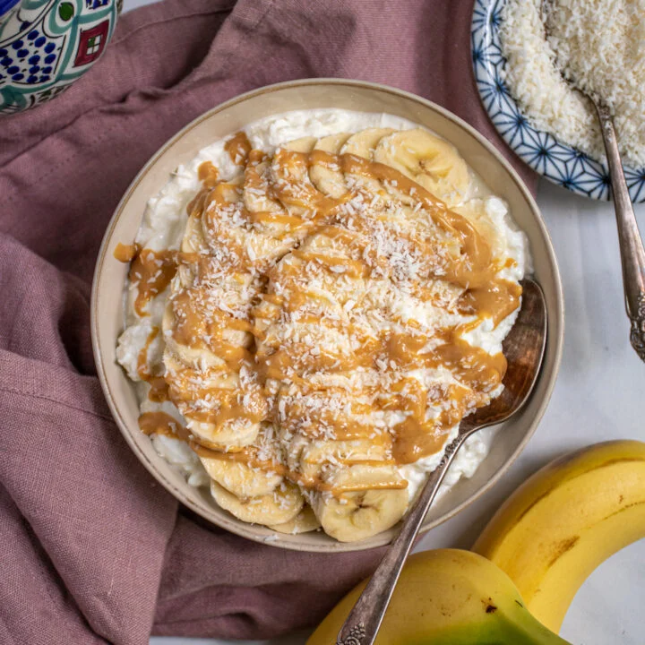

This is a replacement image. I don't have
a photo of my recipe
About this recipe
This recipe was made by me during my long stay at Fort Benning,
Georgia, while I was awaiting my secondary training. I had never
liked cottage cheese up unti then, but then I realized how protein
packed it was! Cottage cheese itself was too boring, so I added
ingredients progressively in order to create a sort of breakfast
monstrosity...1-2 servings
Ingredients
1 cup Cottage Cheese (Preffered percentage)
2 tbsp crunchy peanut butter
1 tbsp Nestle Toll House 63% Dark Chocolate Morsels